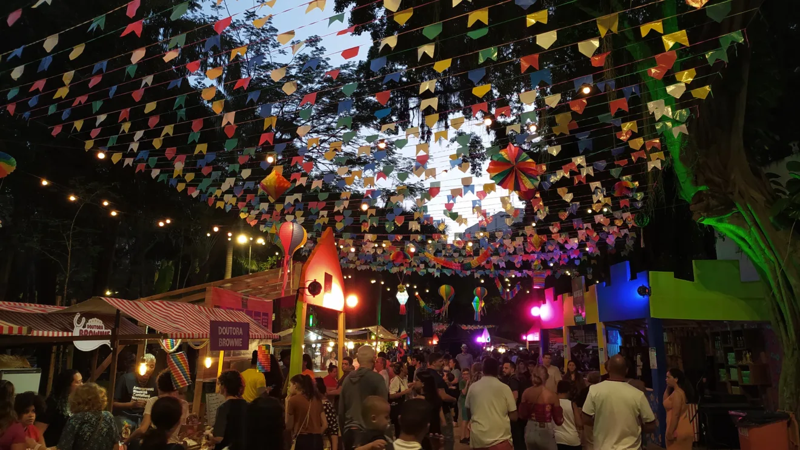

Cultura, Educação e Sustentabilidade
As festas do campo, as tradições populares, a culinária rural e os saberes da terra fazem parte da identidade brasileira. Ao levar isso para a cidade, criamos pontes culturais, oportunidades de renda e trocas de conhecimento. O Agrinho valoriza essas conexões e promove eventos que celebram essas riquezas.
Educação que Transforma
Escolas no campo e na cidade se unem para aprender sobre agricultura, meio ambiente, cidadania e inovação. Através de projetos integradores como este, os estudantes se tornam agentes de mudança em suas comunidades.